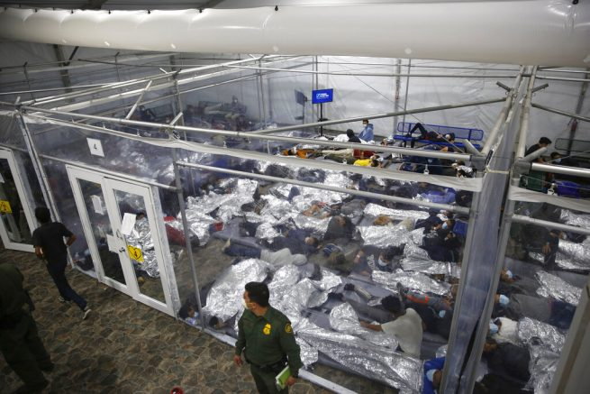
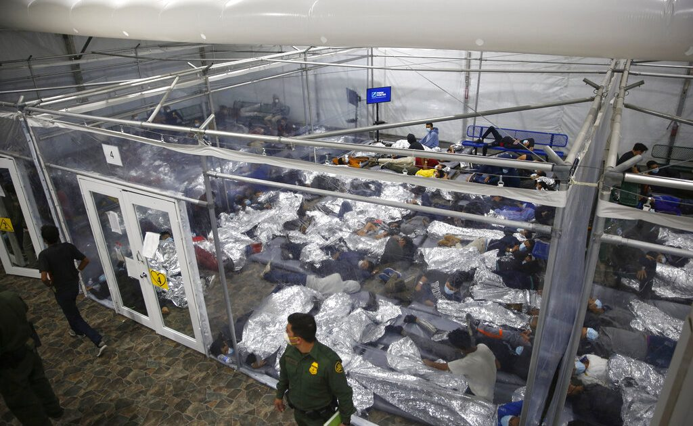
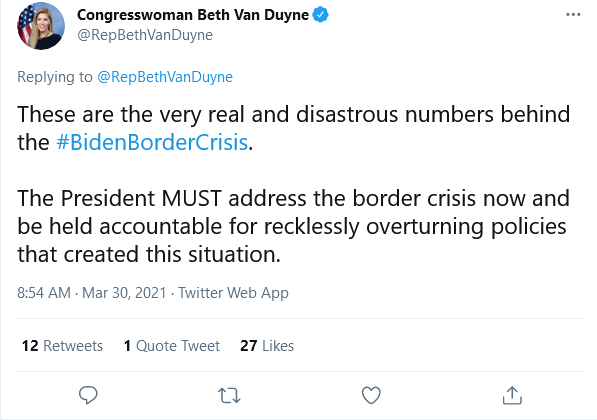

GOP delegation demands answers amid escalating Biden border crisis

OAN Newsroom
Rep.Jodey Arrington (R-Texas) criticized the Biden administration over the influx of illegal immigrants at the southern border during a press briefing in McAllen, Texas on Tuesday.Arrington is part of a Republican delegation touring the Texas-Mexico border to get a first-hand close up look at the consequences of Biden’s open border policy.
While Biden has claimed the border is closed, GOP lawmakers are saying otherwise.The Donna facility in McAllen has become 'Exhibit A' in the humanitarian crisis with its crowded conditions housing migrant children.
Rep.Beth Van Duyne (R-N.Y.) said those unaccompanied minors are then moved out to decompression centers around the country to be processed to make room for even more migrant children at the Donna facility.
As the Biden administration peddles the compassion narrative, Republican lawmakers such as congressman Louie Gohmert (R-Texas) are witnessing only the inhumane.
House #TexasDelegation report from the border: -Donna facility supposed to hold 250, currently has 5700 in custody -3,700 UACs -1600 family units -365 adults -None are tested for COVID here unless showing symptoms#BidenBorderCrisis pic.twitter.com/qpgtn4t03d — Louie Gohmert (@replouiegohmert) March 29, 2021
While Biden claimed there’s a plan, the Republican delegation argued there is nothing of the sort in action.GOP lawmakers said it’s all part of Biden’s continued denial that such a borer crisis exists.
The lawmakers also called out Biden for reversing Trump-era immigration policies, a move which has encouraged migrants to make the dangerous journey north to the U.S.
Posted On: 2021-03-31T00:00:00


Content Date: 2021-03-31
Download Date: 2021-04-16
Document ID: L0C04A02I